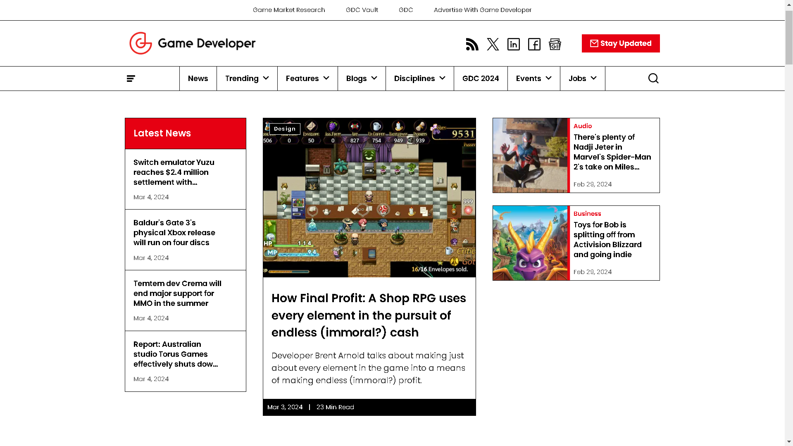
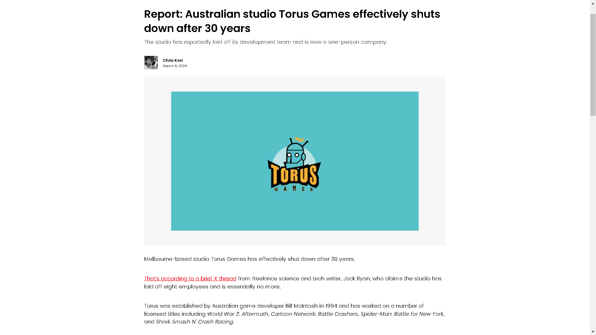

Els elements del repte
Pàgina d'articles de videojocs
Game Developer
És un lloc web dedicat a proporcionar notícies, articles i recursos relacionats amb el desenvolupament de videojocs. Aquest lloc cobreix temes com el disseny de jocs, programació, art, so, màrqueting i altres aspectes de la indústria del desenvolupament de jocs. Pots visitar la pàgina amb un clic aquí.
Elecció d'un article
Elecció
Informe: l'estudi australià Torus Games tanca tancament després de 30 anys. Pots veure l'article aquí.
Resum
L'estudi de Melbourne Torus Games ha tancat efectivament després de 30 anys, segons un fil de X de l'escriptor freelance de ciència i tecnologia Jack Ryan. Es diu que l'estudi ha acomiadat vuit empleats i pràcticament ja no existeix. Torus, creat per Bill McIntosh, desenvolupador de jocs australià, el 1994, ha treballat en diversos títols llicenciats com World War Z: Aftermath, Cartoon Network: Battle Crashers, Spider-Man: Battle for New York i Shrek Smash N' Crash Racing. En la seva pàgina de Linkedin, Torus destaca que ha llançat més de 120 títols en més de 200 versions, des de l'època de la Game Boy fins a les plataformes modernes. Malgrat els seus esforços per iniciar nous projectes, no ha trobat un soci disposat a seguir amb el desenvolupament. Torus continuaria com a empresa, però bàsicament com una empresa d'una sola persona sota McIntosh.